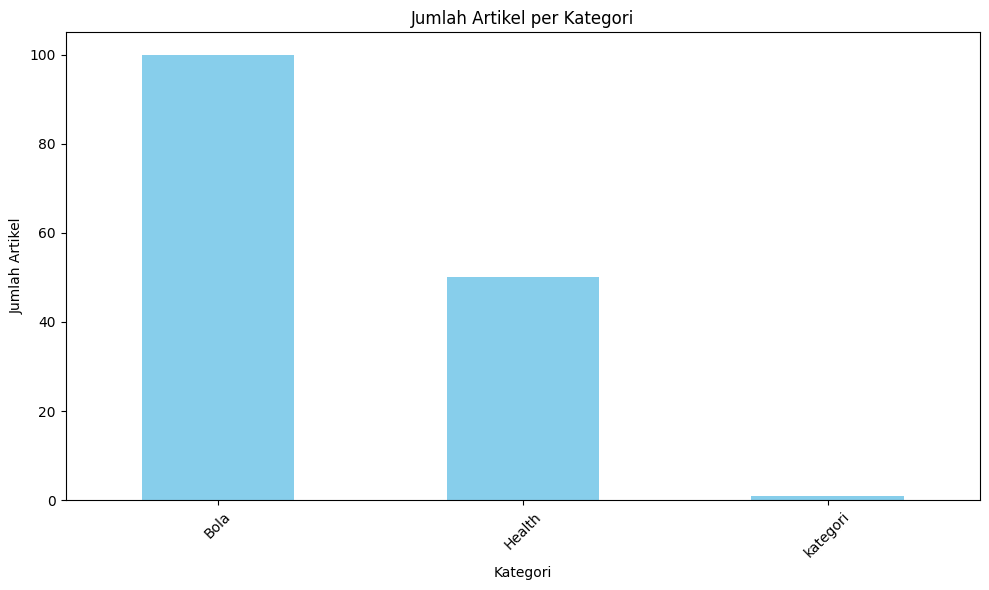

NAMA : A. MAKMUN ALJI
NIM : 210411100241
Klasifikasi Brita#
Klasifikasi berita adalah proses menggunakan teknik kecerdasan buatan atau pembelajaran mesin (machine learning) untuk mengelompokkan artikel berita ke dalam kategori tertentu secara otomatis. Kategori ini bisa berupa topik seperti “politik”, “ekonomi”, “olahraga”, “teknologi”, dan sebagainya. Dalam konteks machine learning, klasifikasi merupakan salah satu jenis masalah di mana model belajar dari data yang telah diberi label dan kemudian digunakan untuk memprediksi label pada data baru.
Berikut adalah langkah-langkah umum dalam klasifikasi berita:
Pengumpulan Data: Langkah pertama adalah mengumpulkan data berita, biasanya berupa teks yang berisi judul, isi berita, dan informasi lainnya. Setiap berita diberi label berdasarkan kategorinya.
Pra-pemrosesan Data: Data teks perlu diubah menjadi bentuk yang dapat dimengerti oleh algoritma machine learning. Beberapa langkah pra-pemrosesan yang umum dilakukan adalah:
Tokenisasi: Memecah teks menjadi kata-kata individu atau token.
Penghapusan Stop Words: Menghapus kata-kata umum yang tidak memiliki banyak makna seperti “dan”, “di”, “yang”, dsb.
Stemming atau Lemmatization: Mengubah kata ke bentuk dasar (misalnya “running” menjadi “run”).
Representasi Vektor: Teks diubah menjadi representasi numerik menggunakan metode seperti Bag of Words (BoW) atau Term Frequency-Inverse Document Frequency (TF-IDF).
Pemilihan Model: Dalam kasus ini, Anda menggunakan logistic regression, salah satu algoritma klasik yang sederhana namun efektif untuk klasifikasi. Logistic regression bekerja dengan memodelkan hubungan antara fitur input (vektor yang mewakili berita) dan probabilitas suatu berita termasuk ke dalam kategori tertentu.
Pelatihan Model: Data yang telah diproses digunakan untuk melatih model logistic regression. Model akan mempelajari pola dari teks berita yang berhubungan dengan setiap kategori.
Evaluasi Model: Model yang telah dilatih diuji pada data baru untuk mengukur performanya. Metrik umum yang digunakan dalam klasifikasi termasuk:
Akurasi: Proporsi berita yang diklasifikasikan dengan benar.
Precision dan Recall: Digunakan untuk mengevaluasi performa model dalam situasi di mana data tidak seimbang (misalnya, kategori tertentu lebih banyak dibanding yang lain).
F1-Score: Gabungan dari precision dan recall.
Prediksi: Setelah model dilatih dan diuji, ia dapat digunakan untuk memprediksi kategori berita baru yang belum diberi label. Model akan memberikan probabilitas setiap berita berada dalam kategori tertentu, dan kategori dengan probabilitas tertinggi akan dipilih sebagai hasil prediksi.
Logistic Regression#
Logistic regression adalah salah satu algoritma dalam pembelajaran mesin yang digunakan untuk memodelkan hubungan antara variabel input (fitur) dengan variabel output yang bersifat biner atau kategori. Meskipun disebut “regresi”, logistic regression sebenarnya digunakan untuk masalah klasifikasi, bukan regresi. Logistic regression memprediksi probabilitas suatu kejadian masuk dalam salah satu dari dua kategori.
Implementasi#
Library yang digunakan#
!pip install gdown
Requirement already satisfied: gdown in /usr/local/lib/python3.10/dist-packages (5.2.0)
Requirement already satisfied: beautifulsoup4 in /usr/local/lib/python3.10/dist-packages (from gdown) (4.12.3)
Requirement already satisfied: filelock in /usr/local/lib/python3.10/dist-packages (from gdown) (3.16.1)
Requirement already satisfied: requests[socks] in /usr/local/lib/python3.10/dist-packages (from gdown) (2.32.3)
Requirement already satisfied: tqdm in /usr/local/lib/python3.10/dist-packages (from gdown) (4.66.6)
Requirement already satisfied: soupsieve>1.2 in /usr/local/lib/python3.10/dist-packages (from beautifulsoup4->gdown) (2.6)
Requirement already satisfied: charset-normalizer<4,>=2 in /usr/local/lib/python3.10/dist-packages (from requests[socks]->gdown) (3.4.0)
Requirement already satisfied: idna<4,>=2.5 in /usr/local/lib/python3.10/dist-packages (from requests[socks]->gdown) (3.10)
Requirement already satisfied: urllib3<3,>=1.21.1 in /usr/local/lib/python3.10/dist-packages (from requests[socks]->gdown) (2.2.3)
Requirement already satisfied: certifi>=2017.4.17 in /usr/local/lib/python3.10/dist-packages (from requests[socks]->gdown) (2024.8.30)
Requirement already satisfied: PySocks!=1.5.7,>=1.5.6 in /usr/local/lib/python3.10/dist-packages (from requests[socks]->gdown) (1.7.1)
!pip install Sastrawi
Requirement already satisfied: Sastrawi in /usr/local/lib/python3.10/dist-packages (1.0.1)
import gdown
import pandas as pd
import numpy as np
import matplotlib.pyplot as plt
from nltk.corpus import stopwords
from Sastrawi.Stemmer.StemmerFactory import StemmerFactory
import re
from sklearn.feature_extraction.text import TfidfVectorizer
from sklearn.preprocessing import LabelEncoder
from sklearn.model_selection import train_test_split
from sklearn.linear_model import LogisticRegression
from sklearn.metrics import accuracy_score
import pickle
import nltk
nltk.download('stopwords')
[nltk_data] Downloading package stopwords to /root/nltk_data...
[nltk_data] Package stopwords is already up-to-date!
True
stop_words = set(stopwords.words('indonesian'))
# new_stopwords = ['newword1', 'newword2']
# stop_words.update(new_stopwords)
print(stop_words)
{'merupakan', 'melainkan', 'misalnya', 'keadaan', 'memberi', 'mengungkapkan', 'berbagai', 'semata-mata', 'kok', 'kinilah', 'bolehlah', 'berkata', 'dimintai', 'sebetulnya', 'menanyai', 'tahu', 'ke', 'segalanya', 'cara', 'dini', 'malahan', 'mula', 'terdahulu', 'diingat', 'berarti', 'jangan', 'dalam', 'diingatkan', 'kalaulah', 'ada', 'seusai', 'sudahlah', 'kamu', 'berapakah', 'menanti-nanti', 'bawah', 'pantas', 'dibuat', 'sudahkah', 'bertanya', 'benarkah', 'memintakan', 'mulanya', 'bahwa', 'kasus', 'terdiri', 'telah', 'kelihatan', 'teringat', 'sementara', 'siap', 'berawal', 'sedemikian', 'bukankah', 'tinggi', 'akhiri', 'betulkah', 'tempat', 'ataukah', 'melakukan', 'menurut', 'pihaknya', 'balik', 'diibaratkannya', 'semisalnya', 'setelah', 'sepertinya', 'terjadi', 'diakhirinya', 'jika', 'bagian', 'bertutur', 'sekurangnya', 'lebih', 'sebab', 'ujar', 'jumlah', 'benarlah', 'hampir', 'baik', 'bukanlah', 'lalu', 'meskipun', 'setidak-tidaknya', 'terlihat', 'seberapa', 'berikutnya', 'sebutlah', 'terakhir', 'janganlah', 'masihkah', 'yakin', 'ditunjuki', 'hanya', 'sebagaimana', 'bersama-sama', 'terlalu', 'ditujukan', 'hendak', 'perlu', 'dimaksudkan', 'mungkin', 'bertanya-tanya', 'dimisalkan', 'sebanyak', 'sehingga', 'berlangsung', 'itu', 'depan', 'misal', 'nantinya', 'didatangkan', 'didapat', 'adapun', 'beginian', 'semaunya', 'sinilah', 'tersebut', 'sedang', 'bagi', 'amatlah', 'sebagai', 'manalagi', 'agar', 'selanjutnya', 'memperlihatkan', 'sekiranya', 'mulai', 'seterusnya', 'apabila', 'mana', 'pukul', 'amat', 'sesekali', 'jikalau', 'lamanya', 'terkira', 'biasanya', 'tadinya', 'tegas', 'benar', 'perlunya', 'selamanya', 'sejauh', 'keinginan', 'berakhirnya', 'luar', 'disebut', 'berikut', 'ibu', 'tegasnya', 'dijawab', 'diperlukannya', 'seperlunya', 'bersama', 'meminta', 'sekadar', 'kurang', 'ditunjuk', 'kemungkinan', 'disini', 'ujarnya', 'sepihak', 'hendaknya', 'sebagainya', 'sampaikan', 'begitu', 'secara', 'bukannya', 'daripada', 'per', 'menjadi', 'boleh', 'saatnya', 'sekecil', 'serta', 'mereka', 'itukah', 'berlebihan', 'enggak', 'inikah', 'lima', 'sebelum', 'dulu', 'cukupkah', 'ditunjukkan', 'siapa', 'makin', 'di', 'nyaris', 'wahai', 'usai', 'bermaksud', 'bahkan', 'akhirnya', 'tapi', 'seringnya', 'diakhiri', 'menantikan', 'pun', 'semua', 'asal', 'bilakah', 'dari', 'ibaratkan', 'ibarat', 'serupa', 'disebutkan', 'paling', 'kelamaan', 'semula', 'andalah', 'ditanya', 'pertama-tama', 'dimulai', 'sewaktu', 'setengah', 'belakangan', 'diberikan', 'sejenak', 'sekarang', 'usah', 'menunjuknya', 'tampak', 'berdatangan', 'bekerja', 'dipergunakan', 'tanpa', 'membuat', 'kelima', 'sedikit', 'belumlah', 'dialah', 'nanti', 'misalkan', 'umumnya', 'tidak', 'bermula', 'sambil', 'dilalui', 'dimulailah', 'sekurang-kurangnya', 'hingga', 'hari', 'menyeluruh', 'jadinya', 'menanya', 'tersebutlah', 'jangankan', 'diungkapkan', 'tuturnya', 'terjadilah', 'tambahnya', 'sama-sama', 'bagaimanakah', 'mempunyai', 'kata', 'berikan', 'pula', 'kala', 'guna', 'harusnya', 'tiba', 'mau', 'ketika', 'akhir', 'sebelumnya', 'menaiki', 'mendatangi', 'memperkirakan', 'selaku', 'lagian', 'semisal', 'hal', 'dimaksud', 'diperkirakan', 'jumlahnya', 'percuma', 'dua', 'kecil', 'terasa', 'sesuatu', 'bagaimanapun', 'kebetulan', 'memulai', 'selama-lamanya', 'menunjuki', 'supaya', 'tandasnya', 'diperlukan', 'oleh', 'tertuju', 'tiap', 'toh', 'jadi', 'sendiri', 'artinya', 'dibuatnya', 'jadilah', 'mengatakan', 'demikian', 'maupun', 'menyebutkan', 'kira', 'siapapun', 'tetap', 'khususnya', 'berturut-turut', 'memihak', 'macam', 'keseluruhan', 'apalagi', 'sebaik', 'selama', 'kami', 'sedangkan', 'sebaliknya', 'berakhir', 'tersampaikan', 'mendatangkan', 'ditanyai', 'awal', 'dikerjakan', 'semata', 'ingat', 'sela', 'seolah-olah', 'apa', 'pertama', 'memang', 'kitalah', 'mengetahui', 'semasa', 'tanyakan', 'mungkinkah', 'seorang', 'kini', 'pak', 'sangatlah', 'waduh', 'itulah', 'olehnya', 'menanyakan', 'tetapi', 'sepanjang', 'masih', 'selain', 'tunjuk', 'mendapatkan', 'demikianlah', 'dapat', 'keduanya', 'keterlaluan', 'dijelaskan', 'sekadarnya', 'sayalah', 'katanya', 'bermacam-macam', 'mengucapkan', 'atas', 'bakalan', 'dimaksudkannya', 'bolehkah', 'sejumlah', 'disinilah', 'persoalan', 'seperti', 'disebutkannya', 'melihatnya', 'kira-kira', 'mendatang', 'terhadapnya', 'berkenaan', 'dikira', 'pertanyakan', 'semuanya', 'sesuatunya', 'tutur', 'mengibaratkan', 'juga', 'haruslah', 'setidaknya', 'diucapkannya', 'besar', 'menyatakan', 'ataupun', 'se', 'walau', 'pentingnya', 'ditunjuknya', 'terdapat', 'jelasnya', 'menginginkan', 'ungkapnya', 'banyak', 'dipersoalkan', 'sekitar', 'sempat', 'sekitarnya', 'sudah', 'terjadinya', 'soal', 'anda', 'dituturkan', 'sajalah', 'sebabnya', 'adalah', 'menunjukkan', 'tahun', 'diminta', 'justru', 'katakan', 'mengakhiri', 'wong', 'lainnya', 'akulah', 'tengah', 'seharusnya', 'memerlukan', 'umum', 'berada', 'makanya', 'kembali', 'dia', 'mengucapkannya', 'sekali-kali', 'beri', 'semakin', 'bila', 'sepantasnya', 'tentu', 'bukan', 'sebenarnya', 'kelihatannya', 'mengerjakan', 'pastilah', 'tentang', 'memastikan', 'diketahuinya', 'mirip', 'demi', 'menggunakan', 'sendirinya', 'diperbuat', 'mengira', 'cukup', 'bulan', 'diberi', 'kedua', 'sekalian', 'sesudah', 'pertanyaan', 'perlukah', 'berapa', 'inginkan', 'pada', 'kalian', 'kenapa', 'lewat', 'ditegaskan', 'tentulah', 'kepada', 'sebesar', 'mempertanyakan', 'menghendaki', 'antaranya', 'mengingatkan', 'berkehendak', 'hanyalah', 'karena', 'bagai', 'mempersiapkan', 'terus', 'semampu', 'sekali', 'dikarenakan', 'terlebih', 'sesegera', 'maka', 'entahlah', 'masalah', 'ucap', 'ingat-ingat', 'enggaknya', 'kan', 'seingat', 'berujar', 'sini', 'turut', 'begini', 'empat', 'melalui', 'begitupun', 'dan', 'dimulainya', 'secukupnya', 'sendirian', 'namun', 'sesampai', 'tambah', 'begitukah', 'mengapa', 'terhadap', 'dengan', 'sebuah', 'masing', 'memberikan', 'dimaksudnya', 'setinggi', 'jawabnya', 'hendaklah', 'waktunya', 'selalu', 'setiba', 'cukuplah', 'tampaknya', 'mempergunakan', 'kamilah', 'tanya', 'buat', 'bahwasanya', 'melihat', 'lanjut', 'apatah', 'ikut', 'seseorang', 'dikatakannya', 'dituturkannya', 'gunakan', 'lanjutnya', 'menyampaikan', 'terbanyak', 'jawab', 'menyangkut', 'berapalah', 'mulailah', 'kita', 'tiga', 'satu', 'begitulah', 'diperbuatnya', 'yakni', 'bisa', 'ditanyakan', 'jawaban', 'naik', 'sana', 'tadi', 'rupanya', 'harus', 'menjelaskan', 'sepantasnyalah', 'seluruh', 'berakhirlah', 'kalaupun', 'ditambahkan', 'ialah', 'adanya', 'aku', 'mengatakannya', 'menyiapkan', 'menjawab', 'menuturkan', 'pihak', 'ungkap', 'betul', 'beberapa', 'dilakukan', 'merasa', 'setibanya', 'sedikitnya', 'menambahkan', 'dirinya', 'seluruhnya', 'minta', 'jelaslah', 'lama', 'beginilah', 'keluar', 'dahulu', 'memungkinkan', 'sekalipun', 'sebegitu', 'menandaskan', 'semacam', 'tertentu', 'dijelaskannya', 'berapapun', 'sejak', 'cuma', 'sebut', 'padahal', 'ucapnya', 'tiba-tiba', 'terutama', 'merekalah', 'bagaimana', 'pasti', 'yang', 'belakang', 'disampaikan', 'inilah', 'ternyata', 'wah', 'dipastikan', 'padanya', 'mampu', 'berlainan', 'digunakan', 'rata', 'berlalu', 'tepat', 'tidakkah', 'diri', 'walaupun', 'diantaranya', 'saat', 'bung', 'sebisanya', 'berturut', 'kepadanya', 'nah', 'sesama', 'sesudahnya', 'kalau', 'caranya', 'masa', 'jelaskan', 'datang', 'pernah', 'berkeinginan', 'ingin', 'agaknya', 'mendapat', 'sampai', 'memisalkan', 'ditunjukkannya', 'keseluruhannya', 'semasih', 'rasa', 'tidaklah', 'sekaligus', 'meyakini', 'masalahnya', 'setempat', 'sampai-sampai', 'diibaratkan', 'ini', 'dong', 'sebaiknya', 'diantara', 'biasa', 'dimungkinkan', 'jelas', 'tanyanya', 'kamulah', 'seketika', 'tak', 'berkali-kali', 'agak', 'malah', 'inginkah', 'segala', 'apakah', 'diperlihatkan', 'saling', 'bagaikan', 'diinginkan', 'segera', 'sering', 'bisakah', 'beginikah', 'mengibaratkannya', 'antara', 'antar', 'sama', 'entah', 'lain', 'dekat', 'seolah', 'kapankah', 'menunjuk', 'panjang', 'bermacam', 'atau', 'bakal', 'saya', 'tandas', 'menuju', 'penting', 'untuk', 'jauh', 'teringat-ingat', 'sebegini', 'berupa', 'akan', 'berjumlah', 'meyakinkan', 'sangat', 'siapakah', 'suatu', 'seenaknya', 'bersiap', 'meski', 'waktu', 'diberikannya', 'kemungkinannya', 'lagi', 'belum', 'diketahui', 'dipertanyakan', 'setiap', 'ia', 'kiranya', 'tentunya', 'akankah', 'apaan', 'kesampaian', 'manakala', 'memperbuat', 'karenanya', 'menanti', 'menegaskan', 'bersiap-siap', 'rasanya', 'baru', 'saja', 'soalnya', 'diucapkan', 'ibaratnya', 'dilihat', 'katakanlah', 'dikatakan', 'nyatanya', 'kapanpun', 'semampunya', 'mampukah', 'mengenai', 'bapak', 'lah', 'mengingat', 'termasuk', 'dipunyai', 'para', 'ditandaskan', 'masing-masing', 'awalnya', 'sebagian', 'sebutnya', 'yaitu', 'sesaat', 'kemudian', 'mempersoalkan', 'kapan', 'punya', 'asalkan', 'sebaik-baiknya'}
from google.colab import drive
drive.mount('/content/drive')
---------------------------------------------------------------------------
KeyboardInterrupt Traceback (most recent call last)
<ipython-input-6-d5df0069828e> in <cell line: 2>()
1 from google.colab import drive
----> 2 drive.mount('/content/drive')
/usr/local/lib/python3.10/dist-packages/google/colab/drive.py in mount(mountpoint, force_remount, timeout_ms, readonly)
98 def mount(mountpoint, force_remount=False, timeout_ms=120000, readonly=False):
99 """Mount your Google Drive at the specified mountpoint path."""
--> 100 return _mount(
101 mountpoint,
102 force_remount=force_remount,
/usr/local/lib/python3.10/dist-packages/google/colab/drive.py in _mount(mountpoint, force_remount, timeout_ms, ephemeral, readonly)
135 )
136 if ephemeral:
--> 137 _message.blocking_request(
138 'request_auth',
139 request={'authType': 'dfs_ephemeral'},
/usr/local/lib/python3.10/dist-packages/google/colab/_message.py in blocking_request(request_type, request, timeout_sec, parent)
174 request_type, request, parent=parent, expect_reply=True
175 )
--> 176 return read_reply_from_input(request_id, timeout_sec)
/usr/local/lib/python3.10/dist-packages/google/colab/_message.py in read_reply_from_input(message_id, timeout_sec)
94 reply = _read_next_input_message()
95 if reply == _NOT_READY or not isinstance(reply, dict):
---> 96 time.sleep(0.025)
97 continue
98 if (
KeyboardInterrupt:
dir = '/content/drive/MyDrive/PPW BARU/report/'
# Nama file yang akan dibaca
file_name = dir+'/kompas (1).csv'
# Membaca file CSV dari folder lokal
df = pd.read_csv(file_name)
# Tampilkan beberapa baris pertama dari file CSV
print(df.head())
judul \
0 MotoGP San Marino 2024: Ketika Marquez Menang ...
1 Klasemen PON XXI 2024: Futsal Gagal Emas, Jati...
2 Hasil One Pride MMA 82: Frans Sormin Bekuk Jak...
3 Indonesia Vs Australia, Kata Manajer Timnas so...
4 Dampak Kehadiran Marteen Paes untuk Persaingan...
waktu \
0 - 09/09/2024, 05:00 WIB
1 - 09/09/2024, 07:59 WIB
2 - 09/09/2024, 14:31 WIB
3 - 09/09/2024, 10:29 WIB
4 - 09/09/2024, 11:30 WIB
url \
0 https://www.kompas.com/motogp/read/2024/09/09/...
1 https://www.kompas.com/sports/read/2024/09/09/...
2 https://www.kompas.com/sports/read/2024/09/09/...
3 https://bola.kompas.com/read/2024/09/09/102929...
4 https://bola.kompas.com/read/2024/09/09/113000...
konten kategori
0 KOMPAS.com - Marc Marquez sukses memenangi Mot... Bola
1 KOMPAS.com - Tim futsal Jawa Timur (Jatim) gag... Bola
2 KOMPAS.com - Frans Lincol Sormin mengalahkan J... Bola
3 KOMPAS.com - Timnas Indonesia belum menentukan... Bola
4 KOMPAS.com - Penampilan penjaga gawang timnas ... Bola
Dataset#
df
| judul | waktu | url | konten | kategori | |
|---|---|---|---|---|---|
| 0 | MotoGP San Marino 2024: Ketika Marquez Menang ... | - 09/09/2024, 05:00 WIB | https://www.kompas.com/motogp/read/2024/09/09/... | KOMPAS.com - Marc Marquez sukses memenangi Mot... | Bola |
| 1 | Klasemen PON XXI 2024: Futsal Gagal Emas, Jati... | - 09/09/2024, 07:59 WIB | https://www.kompas.com/sports/read/2024/09/09/... | KOMPAS.com - Tim futsal Jawa Timur (Jatim) gag... | Bola |
| 2 | Hasil One Pride MMA 82: Frans Sormin Bekuk Jak... | - 09/09/2024, 14:31 WIB | https://www.kompas.com/sports/read/2024/09/09/... | KOMPAS.com - Frans Lincol Sormin mengalahkan J... | Bola |
| 3 | Indonesia Vs Australia, Kata Manajer Timnas so... | - 09/09/2024, 10:29 WIB | https://bola.kompas.com/read/2024/09/09/102929... | KOMPAS.com - Timnas Indonesia belum menentukan... | Bola |
| 4 | Dampak Kehadiran Marteen Paes untuk Persaingan... | - 09/09/2024, 11:30 WIB | https://bola.kompas.com/read/2024/09/09/113000... | KOMPAS.com - Penampilan penjaga gawang timnas ... | Bola |
| ... | ... | ... | ... | ... | ... |
| 146 | Penurunan Apa Saja yang Terjadi pada Lansia? I... | - 05/09/2024, 18:00 WIB | https://health.kompas.com/read/24I05180000468/... | KOMPAS.com - Seiring bertambahnya umur, setiap... | Health |
| 147 | Apakah Minum Kopi Pahit Bagus untuk Kesehatan?... | - 05/09/2024, 16:00 WIB | https://health.kompas.com/read/24I05160000768/... | KOMPAS.com - Kopi kerap diminum untuk mengatas... | Health |
| 148 | Sering Digunakan untuk Diet, Ini Manfaat Keseh... | - 05/09/2024, 13:37 WIB | https://health.kompas.com/read/24I05133717468/... | KOMPAS.com - Dalam beberapa tahun terakhir, cu... | Health |
| 149 | Kenali "BEACH", Akronim untuk Tanda Peringatan... | - 05/09/2024, 14:00 WIB | https://health.kompas.com/read/24I05140000068/... | KOMPAS.com - Gejala kanker ovarium sering kali... | Health |
| 150 | Apakah Bisa Orang Tanpa Diabetes Mengalami Hip... | - 05/09/2024, 12:00 WIB | https://health.kompas.com/read/24I05120000068/... | KOMPAS.com - Hipoglikemia umum terjadi pada pe... | Health |
151 rows × 5 columns
Jumlah Dataset Per Label#
# Hitung jumlah artikel per kategori
category_counts = df['kategori'].value_counts()
# Tampilkan grafik batang
plt.figure(figsize=(10, 6))
category_counts.plot(kind='bar', color='skyblue')
plt.title('Jumlah Artikel per Kategori')
plt.xlabel('Kategori')
plt.ylabel('Jumlah Artikel')
plt.xticks(rotation=45)
plt.tight_layout()
plt.show()

X = df.drop(columns = 'kategori')
Y = df['kategori']
Label Encoder#
label_encoder = LabelEncoder()
# Fit and transform the labels
df['kategori'] = label_encoder.fit_transform(df['kategori'])
print("\nEncoded Labels:")
df
Encoded Labels:
| judul | waktu | url | konten | kategori | |
|---|---|---|---|---|---|
| 0 | MotoGP San Marino 2024: Ketika Marquez Menang ... | - 09/09/2024, 05:00 WIB | https://www.kompas.com/motogp/read/2024/09/09/... | KOMPAS.com - Marc Marquez sukses memenangi Mot... | 0 |
| 1 | Klasemen PON XXI 2024: Futsal Gagal Emas, Jati... | - 09/09/2024, 07:59 WIB | https://www.kompas.com/sports/read/2024/09/09/... | KOMPAS.com - Tim futsal Jawa Timur (Jatim) gag... | 0 |
| 2 | Hasil One Pride MMA 82: Frans Sormin Bekuk Jak... | - 09/09/2024, 14:31 WIB | https://www.kompas.com/sports/read/2024/09/09/... | KOMPAS.com - Frans Lincol Sormin mengalahkan J... | 0 |
| 3 | Indonesia Vs Australia, Kata Manajer Timnas so... | - 09/09/2024, 10:29 WIB | https://bola.kompas.com/read/2024/09/09/102929... | KOMPAS.com - Timnas Indonesia belum menentukan... | 0 |
| 4 | Dampak Kehadiran Marteen Paes untuk Persaingan... | - 09/09/2024, 11:30 WIB | https://bola.kompas.com/read/2024/09/09/113000... | KOMPAS.com - Penampilan penjaga gawang timnas ... | 0 |
| ... | ... | ... | ... | ... | ... |
| 146 | Penurunan Apa Saja yang Terjadi pada Lansia? I... | - 05/09/2024, 18:00 WIB | https://health.kompas.com/read/24I05180000468/... | KOMPAS.com - Seiring bertambahnya umur, setiap... | 1 |
| 147 | Apakah Minum Kopi Pahit Bagus untuk Kesehatan?... | - 05/09/2024, 16:00 WIB | https://health.kompas.com/read/24I05160000768/... | KOMPAS.com - Kopi kerap diminum untuk mengatas... | 1 |
| 148 | Sering Digunakan untuk Diet, Ini Manfaat Keseh... | - 05/09/2024, 13:37 WIB | https://health.kompas.com/read/24I05133717468/... | KOMPAS.com - Dalam beberapa tahun terakhir, cu... | 1 |
| 149 | Kenali "BEACH", Akronim untuk Tanda Peringatan... | - 05/09/2024, 14:00 WIB | https://health.kompas.com/read/24I05140000068/... | KOMPAS.com - Gejala kanker ovarium sering kali... | 1 |
| 150 | Apakah Bisa Orang Tanpa Diabetes Mengalami Hip... | - 05/09/2024, 12:00 WIB | https://health.kompas.com/read/24I05120000068/... | KOMPAS.com - Hipoglikemia umum terjadi pada pe... | 1 |
151 rows × 5 columns
Preprocessing#
Lower Case#
Tahapan pertama yang biasanya dilakukan adalah tahapan case folding. Tahapan ini hampir selalu disertakan ketika melakukan text preprocessing. Mengapa? Karena data yang kita miliki tidak selalu terstruktur dan konsisten dalam penggunaan huruf kapital. Jadi, peran dari case folding adalah untuk menyamaratakan penggunaan huruf kapital. Misalnya data teks yang kita dapat berupa tulisan “DaTA SCIence” maka dengan case folding artinya kita mengubah semua huruf menjadi huruf kecil (lowercase) semua. Sementara itu, karakter lain yang bukan termasuk huruf dan angka, seperti tanda baca dan spasi dianggap sebagai delimiter. Delimiter ini bisa juga dihapus atau diabaikan dengan menggunakan perintah yang ada di Python.
df['lower_text'] = df['konten'].str.lower()
df[['konten', 'lower_text']]
| konten | lower_text | |
|---|---|---|
| 0 | KOMPAS.com - Marc Marquez sukses memenangi Mot... | kompas.com - marc marquez sukses memenangi mot... |
| 1 | KOMPAS.com - Tim futsal Jawa Timur (Jatim) gag... | kompas.com - tim futsal jawa timur (jatim) gag... |
| 2 | KOMPAS.com - Frans Lincol Sormin mengalahkan J... | kompas.com - frans lincol sormin mengalahkan j... |
| 3 | KOMPAS.com - Timnas Indonesia belum menentukan... | kompas.com - timnas indonesia belum menentukan... |
| 4 | KOMPAS.com - Penampilan penjaga gawang timnas ... | kompas.com - penampilan penjaga gawang timnas ... |
| ... | ... | ... |
| 146 | KOMPAS.com - Seiring bertambahnya umur, setiap... | kompas.com - seiring bertambahnya umur, setiap... |
| 147 | KOMPAS.com - Kopi kerap diminum untuk mengatas... | kompas.com - kopi kerap diminum untuk mengatas... |
| 148 | KOMPAS.com - Dalam beberapa tahun terakhir, cu... | kompas.com - dalam beberapa tahun terakhir, cu... |
| 149 | KOMPAS.com - Gejala kanker ovarium sering kali... | kompas.com - gejala kanker ovarium sering kali... |
| 150 | KOMPAS.com - Hipoglikemia umum terjadi pada pe... | kompas.com - hipoglikemia umum terjadi pada pe... |
151 rows × 2 columns
Cleansing Text#
Data cleansing atau data cleaning merupakan suatu proses mendeteksi dan memperbaiki (atau menghapus) suatu record yang ‘corrupt’ atau tidak akurat berdasarkan sebuah record set, tabel, atau database. Selain itu, data cleansing juga berguna untuk mengidentifikasi bagian data mana yang tidak lengkap, tidak tepat, tidak akurat atau tidak relevan, yang selanjutnya untuk data-data “kotor” tersebut akan diganti, dimodifikasi, atau dihapus
df['cleaned_text'] = df['lower_text'].apply(lambda text: re.sub(r'\W', ' ', text))
# Membersihkan whitespace
df['cleaned_text'] = df['cleaned_text'].apply(lambda text: re.sub(r'\s+', ' ', text).strip())
df['cleaned_text'] = df['cleaned_text'].apply(lambda text: re.sub(r'^kompas\s*com\s*', '', text))
df['cleaned_text'][0]
'marc marquez sukses memenangi motogp san marino 2024 pebalap beralias the baby alien itu mengakui adanya bantuan hujan rentang sepekan ini terasa begitu indah bagi pebalap gresini racing marc marquez bagaimana tidak setelah sempat melalui tiga tahun tanpa kemenangan pada balapan motogp marquez langsung berjaya dan finis pertama dalam dua seri beruntun yakni di aragon dan san marino kemenangannya di motogp aragon 2024 pekan lalu mengakhiri penantian marquez selama 1 043 hari untuk berdiri di podium pertama selang sepekan marquez kembali naik podium tertinggi di balapan motogp san marino 2024 yang digelar di sirkuit misano minggu 8 9 2024 baca juga klasemen motogp 2024 usai gp san marino 2024 marquez ke 3 bagnaia tempel martin di puncak marquez finis lebih dari tiga detik di depan francesco bagnaia ducati lenovo team yang memulai balapan dari posisi terdepan pebalap asal cervera itu melesat dari posisi sembilan di grid dan memimpin balapan saat lintasan basah sesaat akibat guyuran hujan ringan bantuan hujan ini diakui oleh marquez pemilik enam gelar juara dunia di kelas motogp ketika mulai turun hujan di layar saat itulah saya memutuskan untuk maju menyerang atau mengambil lebih banyak risiko dalam satu putaran saya berhasil melewati lima pebalap dan memimpin balapan kata marquez kepada para wartawan ketika turun hujan marquez tak gegabah untuk mengganti ban seperti jorge martin pramac racing keputusan jorge martin untuk mengganti ban ternyata memang berharga mahal lantaran masuk pit untuk mengganti ban jorge martin yang tadinya berada di urutan kedua harus melihat posisinya melorot jauh ia pada akhirnya harus masuk pit lagi untuk kembali memakai ban kering pada akhirnya jorge martin hanya mampu menuai satu poin karena finis di posisi 15 baca juga hasil motogp san marino 2024 marc marquez menang back to back marquez mengatakan bahwa dirinya mengikuti bocah lokal asal italia bagnaia untuk tidak mengganti ban seperti diketahui san marino terletak hanya sepelemparan batu dari italia negara bagnaia berasal pebalap lokal memutuskan untuk tetap di luar tak masuk pit jadi mereka pasti lebih tahu dari saya tutur marquez menambahkan sementara itu martin mengakui bahwa dirinya telah membuat kesalahan besar ketika memutuskan untuk masuk pit dengan 20 lap tersisa'
Tokenisasi#
Kita ambil contoh adalah data tweet atau kumpulan dataset pesan spam pasti terdiri dari kalimat. Nah, untuk memudahkan proses analisis data kita harus memecah kalimat-kalimat tersebut menjadi kata atau disebut dengan token. Dengan tokenizing kita dapat membedakan mana antara pemisah kata atau bukan. Jika menggunakan bahasa pemrograman python biasanya tokenizing juga mencakup proses removing number, removing punctuation seperti simbol dan tanda baca yang tidak penting, serta removing whitespace. Selain itu tokenizing juga akan merujuk pada NLTK, tetapi yang sangat disayangkan adalah NLTK belum support bahasa Indonesia. Tapi, jangan khawatir karena kita masih bisa menggunakan modul sastrawi.
df['tokenized_text'] = df['cleaned_text'].apply(lambda text: text.split())
df[['cleaned_text', 'tokenized_text']]
| cleaned_text | tokenized_text | |
|---|---|---|
| 0 | marc marquez sukses memenangi motogp san marin... | [marc, marquez, sukses, memenangi, motogp, san... |
| 1 | tim futsal jawa timur jatim gagal meraih medal... | [tim, futsal, jawa, timur, jatim, gagal, merai... |
| 2 | frans lincol sormin mengalahkan jaka naibaho d... | [frans, lincol, sormin, mengalahkan, jaka, nai... |
| 3 | timnas indonesia belum menentukan warna jersey... | [timnas, indonesia, belum, menentukan, warna, ... |
| 4 | penampilan penjaga gawang timnas indonesia maa... | [penampilan, penjaga, gawang, timnas, indonesi... |
| ... | ... | ... |
| 146 | seiring bertambahnya umur setiap orang akan me... | [seiring, bertambahnya, umur, setiap, orang, a... |
| 147 | kopi kerap diminum untuk mengatasi rasa kantuk... | [kopi, kerap, diminum, untuk, mengatasi, rasa,... |
| 148 | dalam beberapa tahun terakhir cuka apel dan ma... | [dalam, beberapa, tahun, terakhir, cuka, apel,... |
| 149 | gejala kanker ovarium sering kali tidak muncul... | [gejala, kanker, ovarium, sering, kali, tidak,... |
| 150 | hipoglikemia umum terjadi pada penderita diabe... | [hipoglikemia, umum, terjadi, pada, penderita,... |
151 rows × 2 columns
Stopword Removal#
Stopword adalah kata-kata yang sering muncul dalam suatu bahasa yang sering dihilangkan dari tugas pemrosesan bahasa alami (NLP) karena tidak terlalu penting dalam mengartikan makna tekstual. Daftar stopword tertentu dapat berubah berdasarkan bahasa yang dipelajari dan konteksnya. Berikut ini adalah daftar umum kategori stopword:
Stopword Umum: Ini adalah kata-kata yang paling sering muncul dalam suatu bahasa dan sering dihilangkan selama praproses teks. Contohnya termasuk “the,” “is,” “in,” “for,” “where,” “when,” “to,” “at,” dll.
Stopword Kustom: Bergantung pada tugas atau domain tertentu, kata-kata tambahan dapat dianggap sebagai stopword. Ini bisa berupa istilah khusus domain yang tidak banyak berkontribusi pada makna keseluruhan. Misalnya, dalam konteks medis, kata-kata seperti “pasien” atau “perawatan” dapat dianggap sebagai stopword kustom.
Stopword Numerik: Angka dan karakter numerik dapat dianggap sebagai stopword dalam kasus tertentu, khususnya ketika analisis terfokus pada makna teks dan bukan pada nilai numerik tertentu.
Stopword Karakter Tunggal: Karakter tunggal, seperti “a,” “I,” “s,” atau “x,” dapat dianggap sebagai stopword, khususnya dalam kasus di mana karakter tersebut tidak menyampaikan banyak makna dengan sendirinya.
Kata-kata Penghenti Kontekstual: Kata-kata yang merupakan kata-kata penghenti dalam satu konteks tetapi bermakna dalam konteks lain dapat dianggap sebagai kata-kata penghenti kontekstual. Misalnya, kata “akan” mungkin merupakan kata-kata penghenti dalam konteks menerjemahkan bahasa umum tetapi dapat menjadi penting dalam memprediksi kejadian di masa mendatang.
stop_words = set(stopwords.words('indonesian'))
df['no_stopwords_text'] = df['tokenized_text'].apply(lambda tokens: [word for word in tokens if word not in stop_words])
df[['tokenized_text', 'no_stopwords_text']]
| tokenized_text | no_stopwords_text | |
|---|---|---|
| 0 | [marc, marquez, sukses, memenangi, motogp, san... | [marc, marquez, sukses, memenangi, motogp, san... |
| 1 | [tim, futsal, jawa, timur, jatim, gagal, merai... | [tim, futsal, jawa, timur, jatim, gagal, merai... |
| 2 | [frans, lincol, sormin, mengalahkan, jaka, nai... | [frans, lincol, sormin, mengalahkan, jaka, nai... |
| 3 | [timnas, indonesia, belum, menentukan, warna, ... | [timnas, indonesia, menentukan, warna, jersey,... |
| 4 | [penampilan, penjaga, gawang, timnas, indonesi... | [penampilan, penjaga, gawang, timnas, indonesi... |
| ... | ... | ... |
| 146 | [seiring, bertambahnya, umur, setiap, orang, a... | [seiring, bertambahnya, umur, orang, mengalami... |
| 147 | [kopi, kerap, diminum, untuk, mengatasi, rasa,... | [kopi, kerap, diminum, mengatasi, kantuk, minu... |
| 148 | [dalam, beberapa, tahun, terakhir, cuka, apel,... | [cuka, apel, madu, pilihan, populer, kalangan,... |
| 149 | [gejala, kanker, ovarium, sering, kali, tidak,... | [gejala, kanker, ovarium, kali, muncul, stadiu... |
| 150 | [hipoglikemia, umum, terjadi, pada, penderita,... | [hipoglikemia, penderita, diabetes, terkait, p... |
151 rows × 2 columns
Stemming#
Tahap stemming adalah tahapan yang juga diperlukan untuk memperkecil jumlah indeks yang berbeda dari satu data sehingga sebuah kata yang memiliki suffix maupun prefix akan kembali ke bentuk dasarnya. Selain itu juga untuk melakukan pengelompokan kata-kata lain yang memiliki kata dasar dan arti yang serupa namun memiliki bentuk yang berbeda karena mendapatkan imbuhan yang berbeda pula. Di library NLTK juga sudah tersedia modul untuk proses stemming antara lain, porter, lancester, wordnet, dan snowball. Tapi, kembali lagi modul-modul tersebut belum support untuk text berbahasa Indonesia.
# Membuat objek Stemmer dari Sastrawi
factory = StemmerFactory()
stemmer = factory.create_stemmer()
# Menggunakan Sastrawi untuk stemming teks
df['stemmed_text'] = df['no_stopwords_text'].apply(lambda tokens: [stemmer.stem(word) for word in tokens])
df['final_text'] = df['stemmed_text'].apply(lambda x: ' '.join(x))
df[['no_stopwords_text', 'final_text']]
| no_stopwords_text | final_text | |
|---|---|---|
| 0 | [marc, marquez, sukses, memenangi, motogp, san... | marc marquez sukses tang motogp san marino 202... |
| 1 | [tim, futsal, jawa, timur, jatim, gagal, merai... | tim futsal jawa timur jatim gagal raih medali ... |
| 2 | [frans, lincol, sormin, mengalahkan, jaka, nai... | frans lincol sormin kalah jaka naibaho duel de... |
| 3 | [timnas, indonesia, menentukan, warna, jersey,... | timnas indonesia tentu warna jersey jamu austr... |
| 4 | [penampilan, penjaga, gawang, timnas, indonesi... | tampil jaga gawang timnas indonesia maarten pa... |
| ... | ... | ... |
| 146 | [seiring, bertambahnya, umur, orang, mengalami... | iring tambah umur orang alami turun fungsi org... |
| 147 | [kopi, kerap, diminum, mengatasi, kantuk, minu... | kopi kerap minum atas kantuk minum kopi pahit ... |
| 148 | [cuka, apel, madu, pilihan, populer, kalangan,... | cuka apel madu pilih populer kalang orang turu... |
| 149 | [gejala, kanker, ovarium, kali, muncul, stadiu... | gejala kanker ovarium kali muncul stadium timb... |
| 150 | [hipoglikemia, penderita, diabetes, terkait, p... | hipoglikemia derita diabetes kait guna obat im... |
151 rows × 2 columns
x = df['final_text'].values
y = df['kategori'].values
y[1]
0
Split Data#
Xtrain, Xtest,Ytrain,Ytest = train_test_split(x,y,test_size=0.2,random_state=42)
# Filter hanya kategori 0 dan 1
filtered_indices = Ytrain != 2
Xtrain = Xtrain[filtered_indices]
Ytrain = Ytrain[filtered_indices]
Membuat Model LogisticRegression untuk Data Training#
from sklearn.pipeline import make_pipeline
from sklearn.decomposition import TruncatedSVD
vectorizer = TfidfVectorizer() # Gunakan jumlah fitur yang konsisten
X_tfidf = vectorizer.fit_transform(Xtrain)
# SVD untuk reduksi dimensi
svd = TruncatedSVD(n_components=300) # Jumlah komponen yang diinginkan
X_svd = svd.fit_transform(X_tfidf)
# Logistic Regression Model
model = LogisticRegression()
model.fit(X_svd, Ytrain)
# Buat pipeline
pipeline = make_pipeline(vectorizer, svd, model)
# Simpan pipeline
with open(dir+'pipeline.pkl', 'wb') as f:
pickle.dump(pipeline, f)
Mencari Akurasi dari data Testing#
from sklearn.metrics import classification_report, accuracy_score
# Load pipeline
with open(dir+'pipeline.pkl', 'rb') as f:
pipeline = pickle.load(f)
# Prediksi pada data testing
predictions = pipeline.predict(Xtest)
# Prediksi pada data testing
Y_pred = pipeline.predict(Xtest)
# Evaluasi dengan classification report
print("Classification Report:")
print(classification_report(Ytest, Y_pred, target_names=["Bola News", "Health News"]))
# Evaluasi dengan akurasi
accuracy = accuracy_score(Ytest, Y_pred)
print(f"Akurasi: {accuracy:.2f}")
Classification Report:
precision recall f1-score support
Bola News 0.96 1.00 0.98 22
Health News 1.00 0.89 0.94 9
accuracy 0.97 31
macro avg 0.98 0.94 0.96 31
weighted avg 0.97 0.97 0.97 31
Akurasi: 0.97